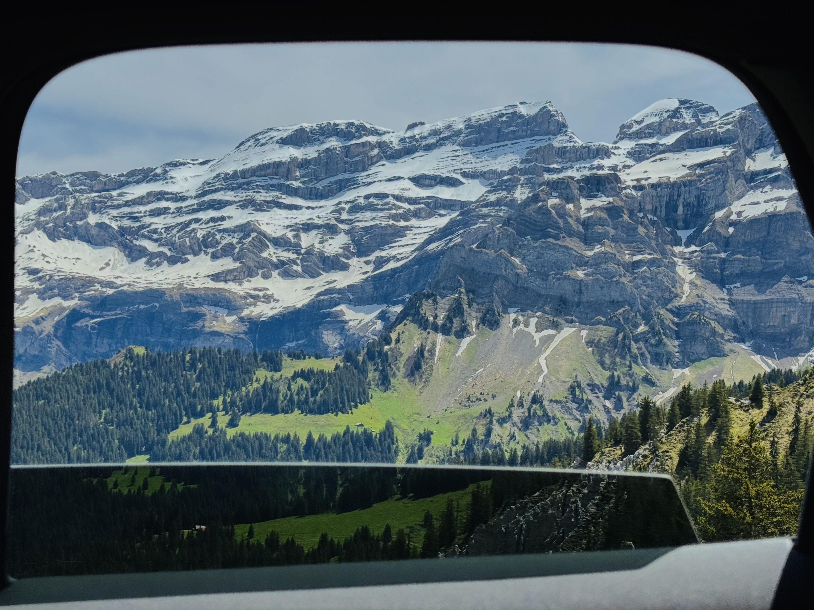
A visual journal
Maybe all that stays is how it felt
Somewhere along the way, I started noticing life in between. Passing light, quiet corners, empty roads. Moments that weren’t really meant to be remembered.
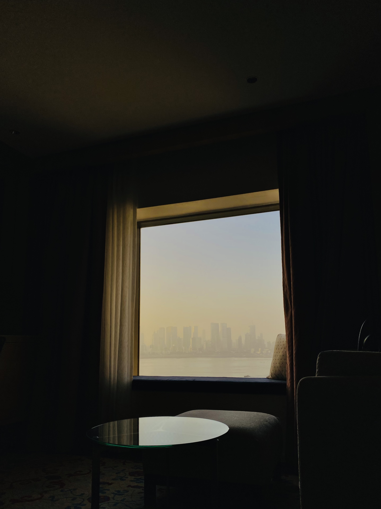
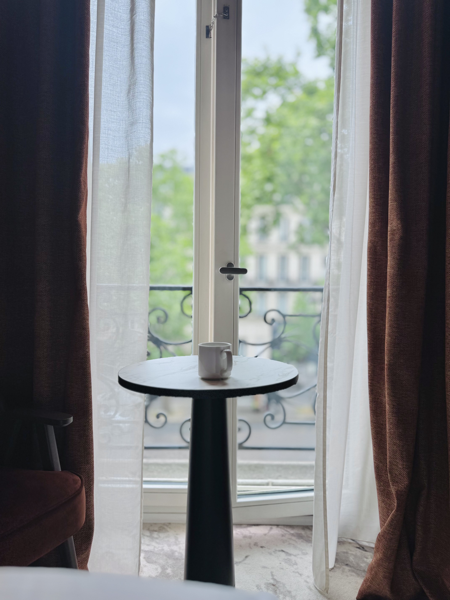
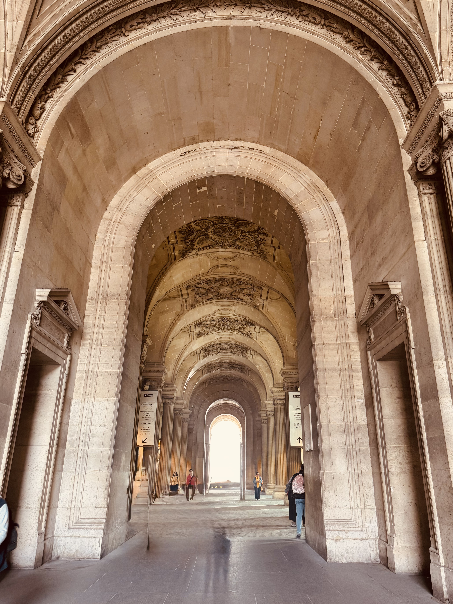
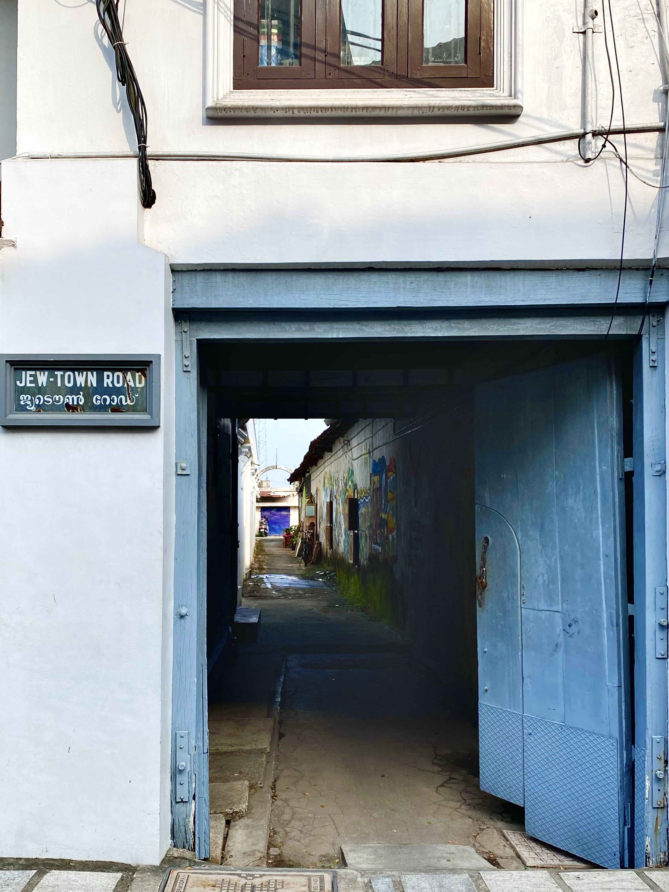
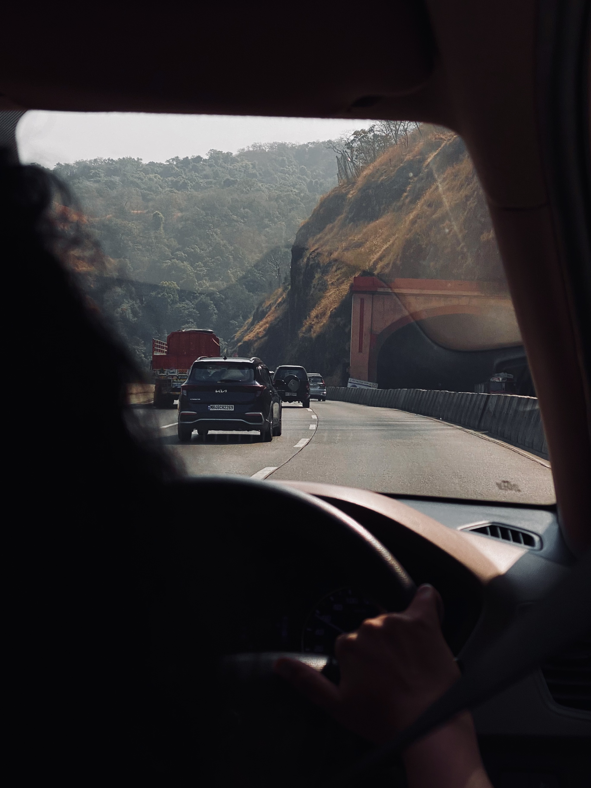
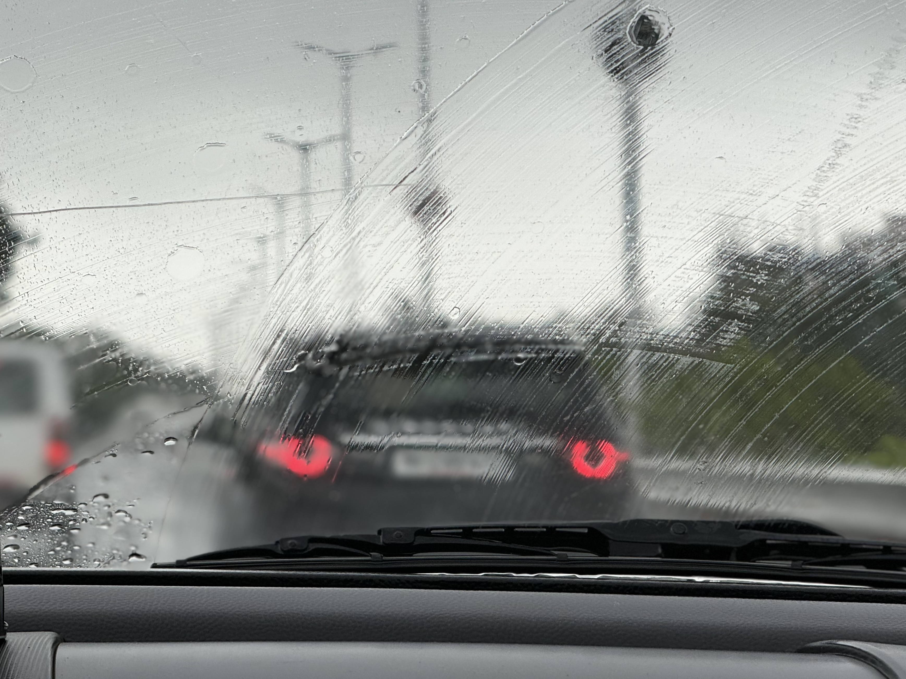
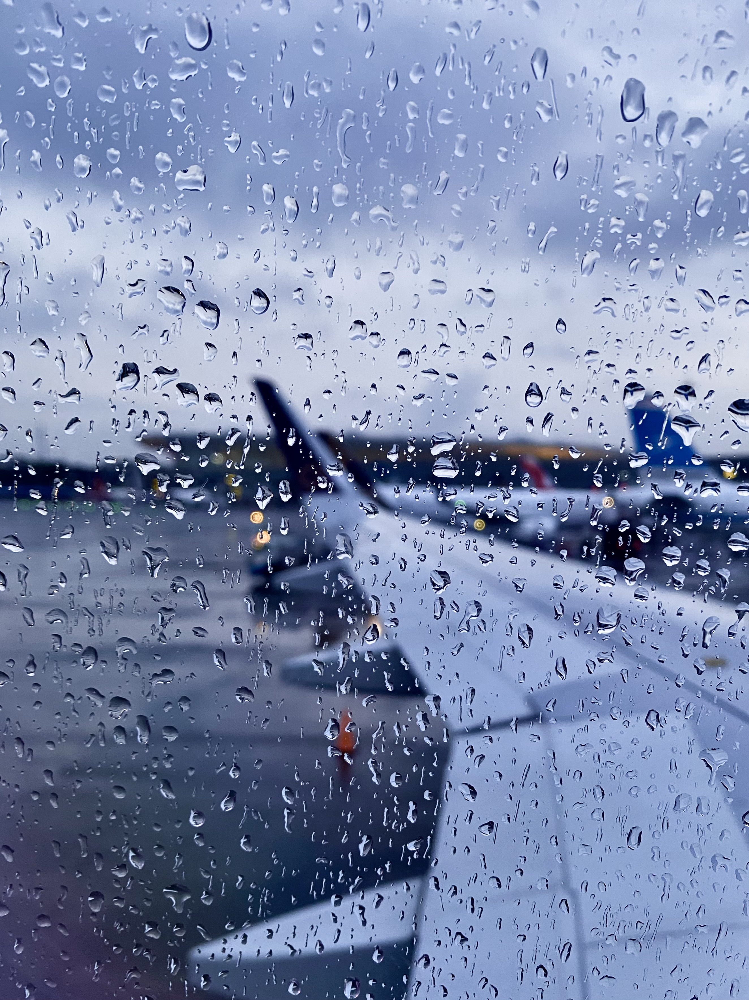
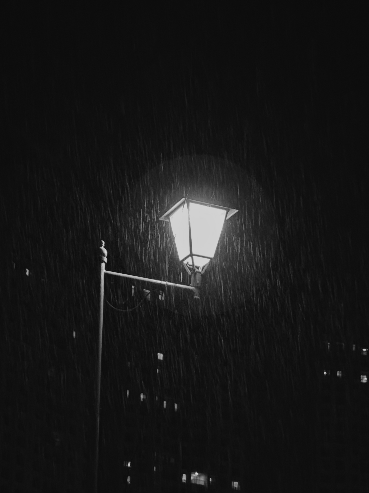
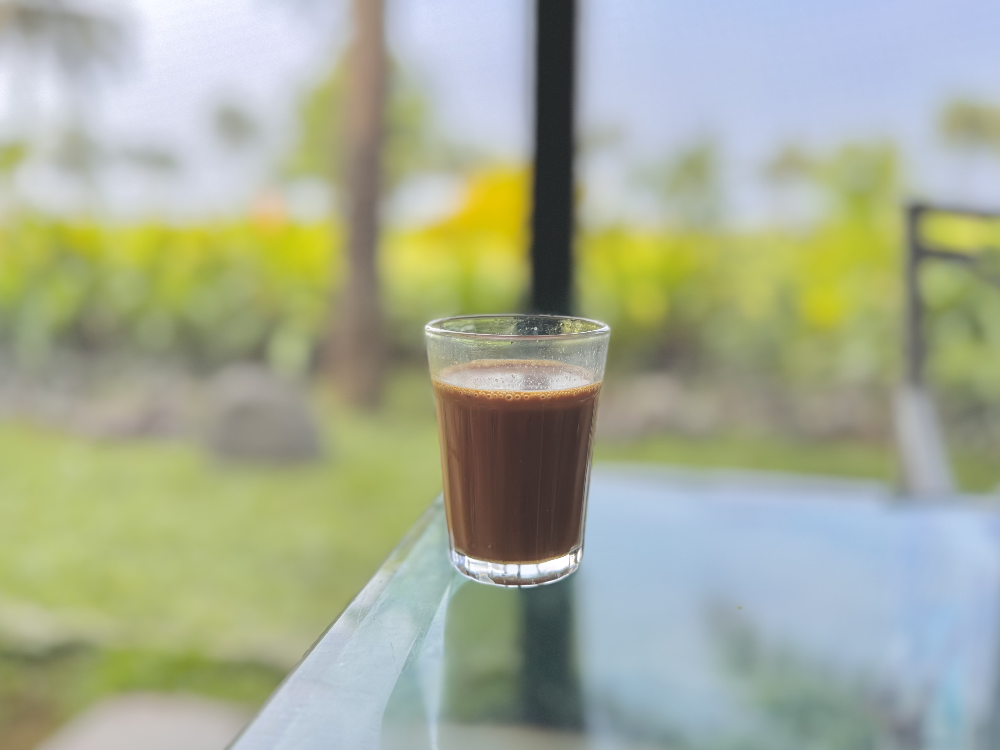
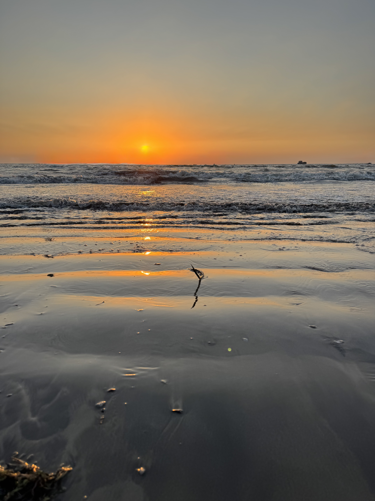
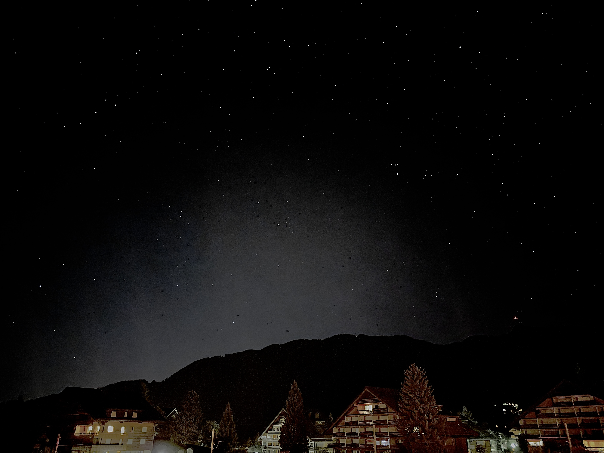
Collections
Organised by feeling, not geography.
- Windows
- Stillness
- Blue Hour
- On the Road
- Quiet Corners
- After Rain
An index that will grow slowly, by feeling rather than by map.
About
I kept what the map left out.
Documenting how places felt. Walking somewhere, waiting for something, stopping a little longer than everyone else wanted, or turning around because the light suddenly changed.
I always remember the things I wasn’t looking for. Another street. Another view. The quiet character of ordinary places. Photography became my reason to slow down.
This isn't a collection of destinations. It's a collection of moments that almost went unnoticed.
Made mostly on an iPhone, one slow look at a time.